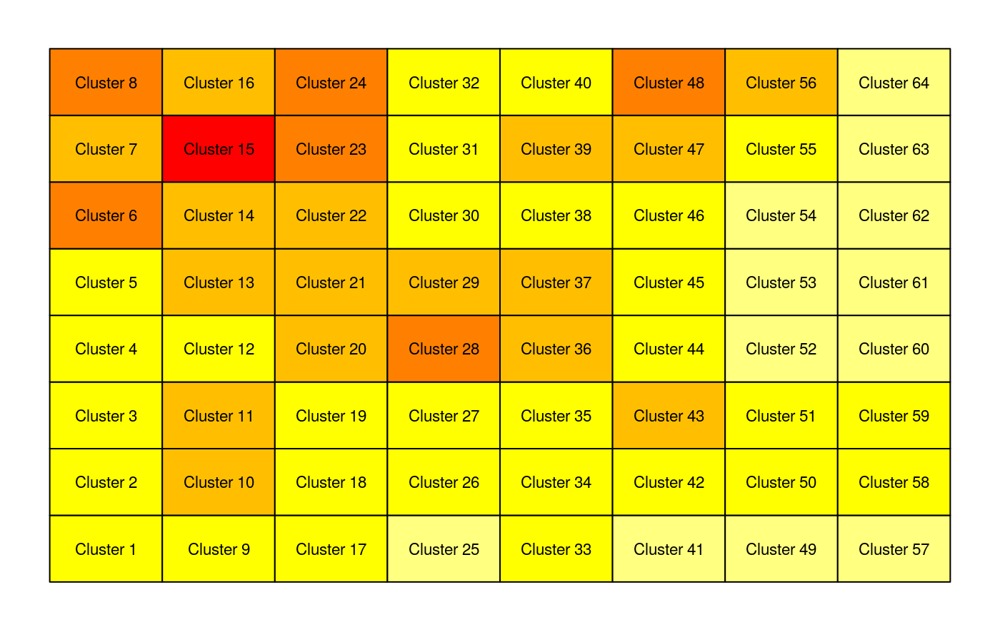
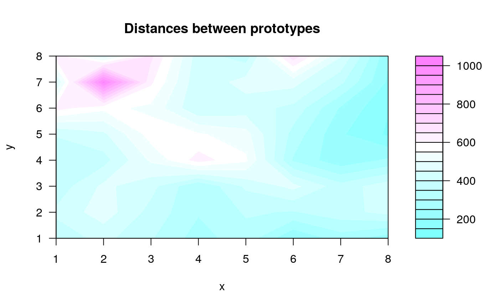
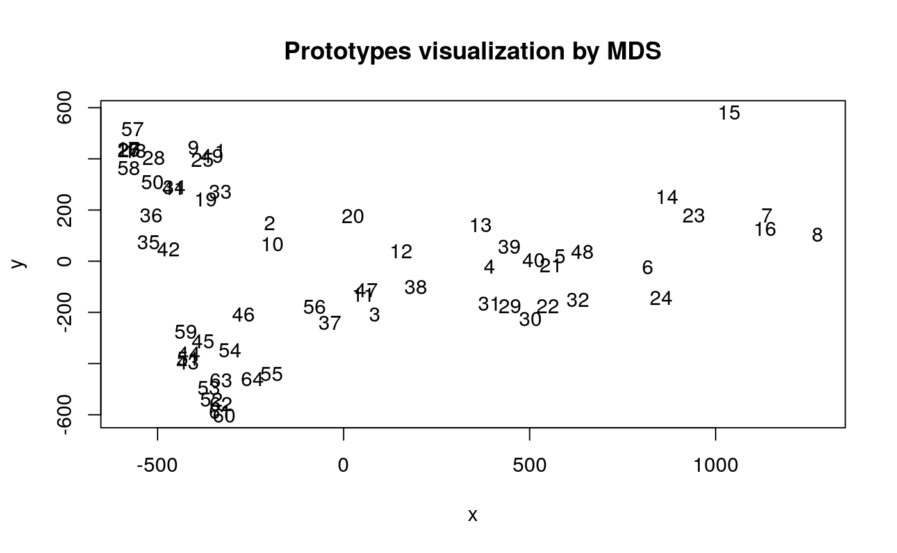
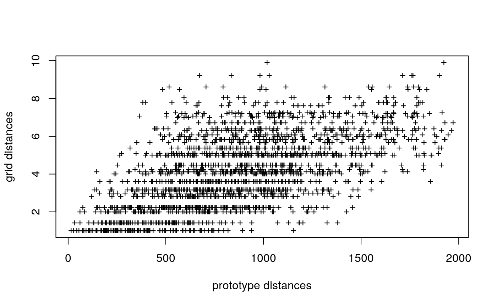
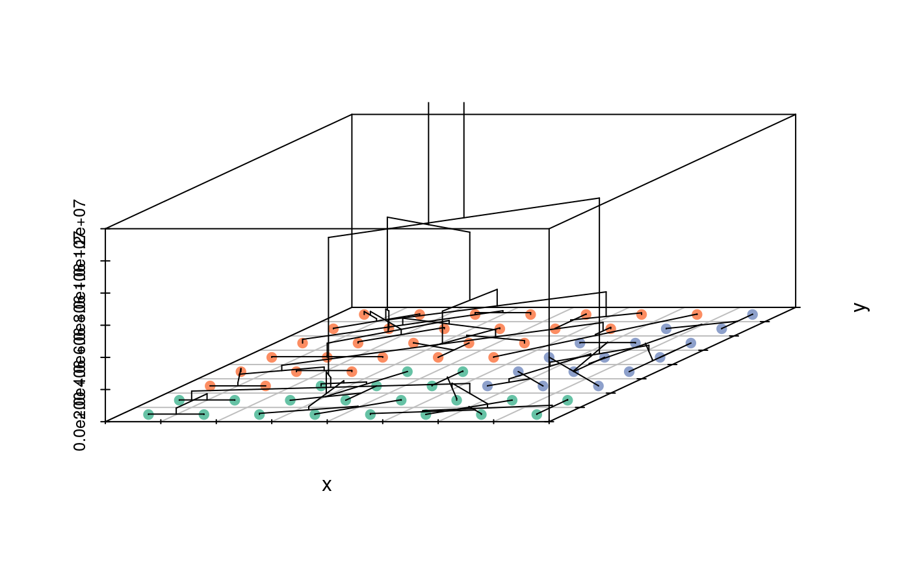
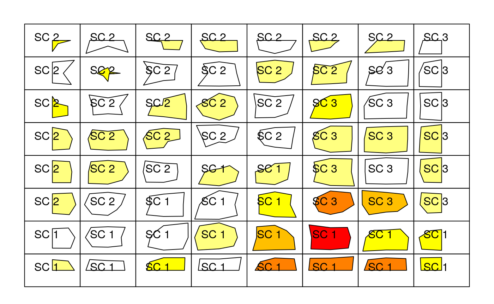

Self-Organizing Map for contingency tables
d-doc-korrespSOM.RmdBasic package description
To be able to run the SOM algorithm, you have to load the package called SOMbrero. The function used to run it is called trainSOM() and is detailed below.
This documentation only considers the case of contingency tables.
Arguments
The trainSOM function has several arguments, but only the first one is required. This argument is x.data which is the dataset used to train the SOM. In this documentation, it is passed to the function as a matrix or a data frame. This set must be a contingency table, i.e., it must contain either 0 or positive integers. Column and row names must be supplied.
The other arguments are the same as the arguments passed to the initSOM function (they are parameters defining the algorithm, see help(initSOM) for further details).
Outputs
The trainSOM function returns an object of class somRes (see help(trainSOM) for further details on this class).
Case study: the presidentielles2002 data set
The presidentielles2002 data set provides the number of votes at the first round of the 2002 French presidential election for each of the 16 candidates in all of the 106 French administrative districts called “departements”. Further details about this data set and the 2002 French presidential election are given with help(presidentielles2002).
## MEGRET LEPAGE GLUCKSTEIN BAYROU CHIRAC LE_PEN
## 667043 535875 132696 1949219 5666021 4804772
## TAUBIRA SAINT_JOSSE MAMERE JOSPIN BOUTIN HUE
## 660515 1204801 1495774 4610267 339157 960548
## CHEVENEMENT MADELIN LAGUILLER BESANCENOT
## 1518568 1113551 1630118 1210562(the two candidates that ran the second round of the election were Jacques Chirac and the far-right candidate Jean-Marie Le Pen)
Training the SOM
set.seed(01091407)
korresp.som <- trainSOM(x.data=presidentielles2002, dimension=c(8,8),
type="korresp", scaling="chi2", nb.save=10,
radius.type="letremy")
korresp.som## Self-Organizing Map object...
## online learning, type: korresp
## 8 x 8 grid with square topology
## neighbourhood type: letremy
## distance type: letremyAs the energy is registered during the intermediate backups, we can have a look at its evolution

which is stabilized during the last 100 iterations.
Resulting clustering
The clustering component contains the final classification of the dataset. As both row and column variables are classified, the length of the resulting vector is equal to the sum of the number of rows and the number of columns.
NB: The clustering component shows first the column variables (here, the candidates) and then the row variables (here, the departements).
The following table indicates which graphics are available for a korresp SOM.
| Type | Energy | Obs | Prototypes | Add | Super Cluster |
|---|---|---|---|---|---|
| no type | x | ||||
| hitmap | x | x | |||
| color | x2 | x2 | |||
| lines | x2 | x2 | |||
| barplot | x | ||||
| radar | x | ||||
| pie | |||||
| boxplot | |||||
| 3d | x2 | ||||
| poly.dist | x | x | |||
| umatrix | x | ||||
| smooth.dist | x | ||||
| words | |||||
| names | x | ||||
| graph | |||||
| mds | x | x | |||
| grid.dist | x | ||||
| grid | x | ||||
| dendrogram | x | ||||
| dendro3d | x |
In the column “Prototypes”, a plot marked “x2” means that this plot is available for both row and column variables. In the “Super Cluster” column, a “x2” cell means the plot is available for both data set variables and additional variables.
## MEGRET LEPAGE GLUCKSTEIN
## 6 8 8
## BAYROU CHIRAC LE_PEN
## 4 26 60
## TAUBIRA SAINT_JOSSE MAMERE
## 15 48 5
## JOSPIN BOUTIN HUE
## 1 8 24
## CHEVENEMENT MADELIN LAGUILLER
## 21 6 22
## BESANCENOT ain aisne
## 6 43 43
## allier alpes_de_haute_provence hautes_alpes
## 42 49 49
## alpes_maritimes ardeche ardennes
## 53 42 42
## ariege aube aude
## 41 42 42
## aveyron bouches_du_rhone calvados
## 33 61 34
## cantal charente charente_maritime
## 49 33 33
## cher correze corse_sud
## 42 58 49
## haute_corse cote_d'or cotes_d'armor
## 49 43 34
## creuse dordogne doubs
## 49 33 43
## drome eure eure_et_loir
## 43 43 42
## finistere gard haute_garonne
## 17 51 46
## gers gironde herault
## 41 39 47
## ille_et_vilaine indre indre_et_loire_
## 17 41 35
## isere jura landes
## 46 50 33
## loir_et_cher loire haute_loire
## 42 51 50
## loire_atlantique loiret lot
## 17 51 41
## lot_et_garonne_ lozere maine_et_loire_
## 42 49 17
## manche marne haute_marne
## 33 43 41
## mayenne meurthe_et_moselle meuse
## 50 44 50
## morbihan moselle nievre
## 34 53 41
## nord oise orne
## 30 44 42
## pas_de_calais puy_de_dome pyrenees_atlantiques
## 32 35 34
## hautes_pyrenees pyrenees_orientales bas_rhin
## 41 42 3
## haut_rhin rhone haute_saone
## 51 12 42
## saone_et_loire_ sarthe savoie
## 35 35 43
## haute_savoie paris seine_maritime_
## 51 13 56
## seine_et_marne_ yvelines deux_sevres
## 45 12 33
## somme tarn tarn_et_garonne
## 48 42 41
## var vaucluse vendee
## 59 51 34
## vienne haute_vienne vosges
## 33 33 43
## yonne territoire_de_belfort essonne
## 42 49 36
## hauts_de_seine_ seine_saint-denis val_de_marne
## 28 46 36
## val_d'oise guadeloupe martinique
## 45 15 15
## guyane la_reunion mayotte
## 15 1 57
## nouvelle_caledonie polynesie_francaise saint_pierre_et_miquelon
## 58 58 57
## wallis_et_futuna francais_de_l'etranger
## 57 58The resulting distribution of the clustering on the map can also be visualized by a hitmap:

For a more precise view, "names" plot is implemented: it prints, in each neuron, the names of the variables assigned to it ; in the korresp SOM, both row and column variable names are printed.

The map is divided into two main parts: minor candidates are classified at its top left hand side whereas the first main candidates CHIRAC, LE PEN and JOSPIN are classified at the bottom right hand side of the map, in three different parts of this corner. Some strinking facts are:
the position of TAUBIRA, opposed to that of JOSPIN from who she is very close from a political point of view. She is associated with Guyane, Guadeloupe and Martinique, overseas departements;
the position of HUE, LAGUILLER and BESANCENOT, far left candidates, all associated in the same cluster and close to traditional departements voting for far left candidates: Nord, Pas de Calais and Seine Maritime ;
the fact that most departement are classified at the bottom right hand side of the map with the three main candidates.
Clustering interpretation
Some graphics from the numeric SOM algorithm are still available in the korresp case. They are detailed below. As the resulting clustering provides the classification for both rows and columns, a new argument view is used to specify which one should be considered. Its possible values are either "r" for row variables (the default value) or "c" for column variables.
Graphics on prototype values
Three representations are available:
- with lines: either all row or all column variables are plotted (
viewargument is used)
# plot the line prototypes (106 French departements)
plot(korresp.som, what="prototypes", type="lines", view="r", print.title=TRUE)
# plot the column prototypes (16 candidates)
plot(korresp.som, what="prototypes", type="lines", view="c", print.title=TRUE)
The peaks in neurons 5 and 6 correspond, in the row view, to the overseas departements and, in the column view, to the candidate TAUBIRA. In the column views, the two peaks clearly identified in the bottom right side clusters correspond to the two “main” tranditional candidates JOSPIN and CHIRAC (respectively, left and right candidates).
A more precise individual view are given with the graphics “color” and “3d”, here drawn, as an example for the candidate “Le Pen” and for the departement “Martinique”. * in color: one of the row or column variable (the variable is chosen with the argument variable) is represented on the map; * in 3d, which handling is similar to "color".
par(mfrow=c(1,2))
plot(korresp.som, what="prototypes", type="color", variable="TAUBIRA")
plot(korresp.som, what="prototypes", type="3d", variable="martinique")
The first graphic shows that TAUBIRA obtained her best scores in the departements located at the left hand side of the map. The second graphic shows that the candidates that obtained the higher scores in Martinique are located in the bottom right hand side of the map.
The graphics can also be drawn by giving the variable number and its type, either “r” or “c” (here, as an example, CHIRAC who is the 5th candidate):
par(mfrow=c(1,2))
plot(korresp.som, what="prototypes", type="color", variable=5, view="c")
plot(korresp.som, what="prototypes", type="3d", variable=5, view="c")
Hence CHIRAC obtained more votes in departement located at the top of the map and has his lowest scores in departements Jura, Aubde, Haute Saone, Ardennes, Alpes de Haute Provence, Ariege, … located at the bottom (middle) of the map.
Graphic on prototype distances
These graphics are exactly the same as in the numerical case:
"poly.dist"represents the distances between neighboring prototypes with polygons plotted for each cell of the grid. The smaller the distance between a polygon’s vertex and a cell border, the closer the pair of prototypes. The colors indicates the number of observations in the neuron (white=empty);"umatrix"fills the neurons of the grid using colors that represent the average distance between the current prototype and its neighbors (darker colors for prototypes that are farther from their neighbors);"smooth.dist"plots the mean distance between the current prototype and its neighbors with a color gradation;"mds"plots the number of the neuron on a map according to a Multi Dimensional Scaling (MDS) projection;"grid.dist"plots a point for each pair of prototypes, with x coordinates representing the distance between the prototypes in the input space, and y coordinates representing the distance between the corresponding neurons on the grid.





Neuron 6 which has been already picked out in the section Clustering interpretation for having prototypes rather different than the rest of the map shows a larger distance to the others.
Analyze the projection quality
## $topographic
## [1] 0.1226415
##
## $quantization
## [1] 13348.01By default, the quality function calculates both quantization and topographic errors. It is also possible to specify which one you want to obtain, by using the argument quality.type.
The topographic error value varies between 0 (good projection quality) and 1 (poor projection quality). Here, the topographic quality of the mapping is rather good with a topographic error equal to 0.123.
The quantization error is an unbounded positive number. The closer from 0 it is, the better the projection quality is.
Building super classes from the resulting SOM
In the SOM algorithm, the number of clusters is necessarily close to the number of neurons on the grid (not necessarily equal as some neurons may have no observations assigned to them). This - quite large - number may not suit the original data for a clustering purpose.
A usual way to address clustering with SOM is to perform a hierarchical clustering on the prototypes. This clustering is directly available in the package SOMbrero using the function superClass. To do so, you can first have a quick overview to decide on the number of super clusters which suits your data.
## Warning in plot.somSC(superClass(korresp.som)): Impossible to plot the rectangles: no super clusters.
By default, the function plots both a dendrogram and the evolution of the percentage of explained variance. Here, 3 super clusters seem to be a good choice. The output of superClass is a somSC class object. Basic functions have been defined for this class:
##
## SOM Super Classes
## Initial number of clusters : 64
## Number of super clusters : 3
##
##
## Frequency table
## 1 2 3
## 21 28 15
##
## Clustering
## 1 2 3 4 5 6 7 8 9 10 11 12 13 14 15 16 17 18 19 20 21 22 23 24 25
## 1 1 2 2 2 2 2 2 1 1 2 2 2 2 2 2 1 1 1 2 2 2 2 2 1
## 26 27 28 29 30 31 32 33 34 35 36 37 38 39 40 41 42 43 44 45 46 47 48 49 50
## 1 1 1 2 2 2 2 1 1 1 1 2 2 2 2 1 1 3 3 3 3 2 2 1 1
## 51 52 53 54 55 56 57 58 59 60 61 62 63 64
## 3 3 3 3 3 2 1 1 3 3 3 3 3 3
Like plot.somRes, the function plot.somSC has an argument 'type' which offers many different plots and can thus be combined with most of the graphics produced by plot.somSC:
Case "grid" fills the grid with colors according to the super clustering (and can provide a legend). Case "dendro3d" plots a 3d dendrogram.


The three super-clusters correspond to traditional votes (blue), far right votes (green) and votes for minor candidates (orange).
A couple of plots from plot.somRes are also available for the super clustering. Some identify the super clusters with colors:


And some others identify the super clusters with titles:



Let us consider the first super cluster. It contains departements which were crucial in promoting the far right candidate LE PEN, unexpected winner of the first round:
## [1] "CHIRAC" "JOSPIN"
## [3] "allier" "alpes_de_haute_provence"
## [5] "hautes_alpes" "ardeche"
## [7] "ardennes" "ariege"
## [9] "aube" "aude"
## [11] "aveyron" "calvados"
## [13] "cantal" "charente"
## [15] "charente_maritime" "cher"
## [17] "correze" "corse_sud"
## [19] "haute_corse" "cotes_d'armor"
## [21] "creuse" "dordogne"
## [23] "eure_et_loir" "finistere"
## [25] "gers" "ille_et_vilaine"
## [27] "indre" "indre_et_loire_"
## [29] "jura" "landes"
## [31] "loir_et_cher" "haute_loire"
## [33] "loire_atlantique" "lot"
## [35] "lot_et_garonne_" "lozere"
## [37] "maine_et_loire_" "manche"
## [39] "haute_marne" "mayenne"
## [41] "meuse" "morbihan"
## [43] "nievre" "orne"
## [45] "puy_de_dome" "pyrenees_atlantiques"
## [47] "hautes_pyrenees" "pyrenees_orientales"
## [49] "haute_saone" "saone_et_loire_"
## [51] "sarthe" "deux_sevres"
## [53] "tarn" "tarn_et_garonne"
## [55] "vendee" "vienne"
## [57] "haute_vienne" "yonne"
## [59] "territoire_de_belfort" "essonne"
## [61] "hauts_de_seine_" "val_de_marne"
## [63] "la_reunion" "mayotte"
## [65] "nouvelle_caledonie" "polynesie_francaise"
## [67] "saint_pierre_et_miquelon" "wallis_et_futuna"
## [69] "francais_de_l'etranger"